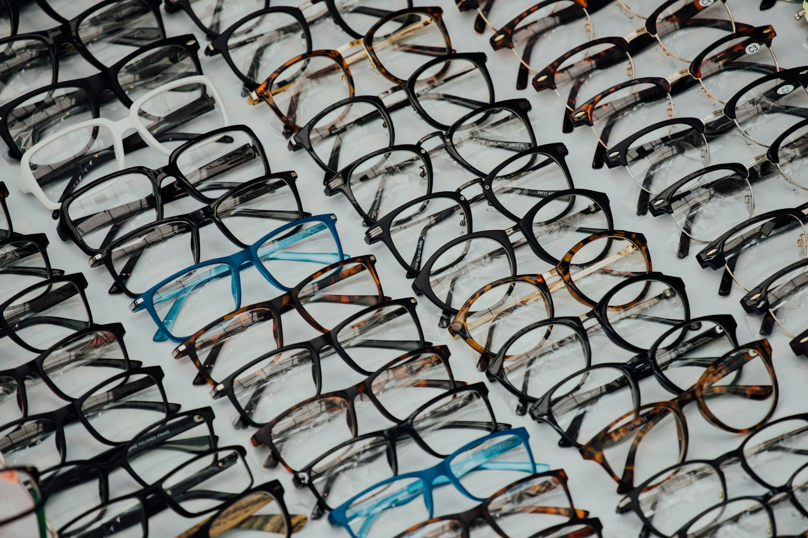

Lentile
Lentila potrivită contează mai mult decât rama.
Rama se vede. Lentila se simte. Lucrăm cu Essilor, Zeiss, Hoya, Ital-Lenti și Rhein-Vision, și alegem împreună tipul potrivit pentru cum îți folosești ochii toată ziua.
Lentile progresive
Trei distanțe într-o singură lentilă: departe, intermediar și aproape, fără linie de separație. Trecerea între zone se face gradat, iar adaptarea ține de obicei câteva zile.
Lentile bifocale
Două zone clar delimitate, pentru distanță și pentru citit. Soluția simplă și mai accesibilă când nu ai nevoie de zona intermediară.
Protecție pentru calculator
Filtru pentru lumina albastră și un mic ajutor de focalizare, pentru cine stă opt ore pe zi în fața ecranului. Reduce oboseala de la finalul zilei.
Essilor Stellest, pentru copii
Lentile proiectate pentru încetinirea evoluției miopiei la copii. Se prescriu după un consult și se urmăresc în timp.
EyeDrive, pentru condus
Reduc reflexiile și orbirea de la farurile din sens opus. Diferența se simte cel mai tare la condusul de noapte și pe ploaie.
Ochelari polarizați
Filtru de polarizare plus protecție 100% UV-A și UV-B. Taie strălucirea de pe șosea, apă și zăpadă și dau contrast mai bun.
Lentile de contact
Pentru cine nu vrea ramă tot timpul, sau pentru sport. Se aleg după o măsurare, nu după dioptria de pe ochelari.
Materialele lentilelor
De la sticlă minerală la materiale organice subțiri și ușoare. Alegerea depinde de dioptrie, de ramă și de cât de mult stau ochelarii pe nas.
Rhein-Vision sunt lentile fabricate în România, o variantă bună când vrei calitate fără prețul unui brand internațional.
Nu știi ce ți se potrivește
Vino cu ochelarii actuali și îți spunem.
Îi măsurăm, discutăm ce te deranjează la ei și îți arătăm ce se schimbă cu alt tip de lentilă. Verificarea nu costă nimic.
Sună acum